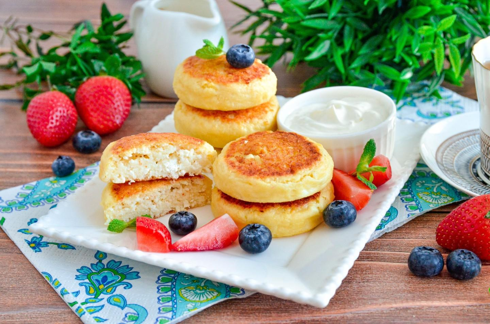

Полезные советы

Для приготовления лучше использовать сухой творог, тогда сырники будут хорошо держать форму.
Не добавляйте слишком много муки, иначе сырники станут плотными.
Подавать сырники можно со сметаной, вареньем, мёдом или свежими ягодами.